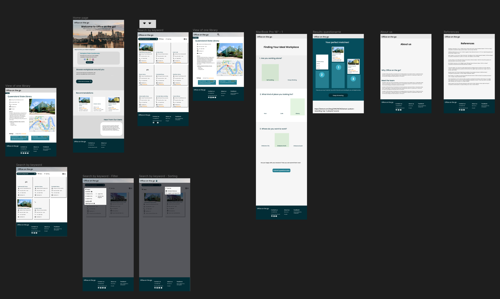

I am a computer science student that are passionate with coding. I love to create and feel satisfied when I can see my finished product. I am currently living in Brisbane and studying computer science in University of queensland. Hope my experience got from university course could be applied in my career.
In university, I learned many developing skills. I am more comfortable with backend programming
In course computer system and programming I did several diifferent assignments.
in the A1,we produced a commandline wordle game with C.
in the A3,we produced a commandline subprocess generator.
During the Rapid sprint Design, Our team was inspired by a previous concept which is about a library finder.it selected students as the target audience and use library api to provide a user-friendly application for students who want to work outside the campus. Comparing other datasets recommended, we all agree to use a library data set because it has a lot of useful columns that could be valuable. One team member suggested that we could design an application for students to find the best library.
We decided to develop an application called library finder for students in Brisbane or UQ because the library in UQ is always full of students. For students who want to easily find a seat, they could find a library outside the campus and our website should provide students a convenient experience when they want to find somewhere to study.
During the Rapid sprint Design, I suggested we could use a map that we have learnt from the tutorial. Most team members think that is a good idea and we decided to add a main function called Search by Map. This function allows users to enter a map to navigate all the libraries fetched from the API. On this map, each map will be marked with a marker. When a user clicks on a marker, a pop up window will show around this marker and show more detailed information related to this library. If the user further clicks on a “see more” button, the user will enter a library page that shows a lot of information for this library. We also hope our application could be used on many different screen sizes when we do the rapid sprint design, and sketch the layout for the application on the mobile platform.
From the Rapid sprint Design,I learnt how to quickly generate an idea into a prototype and how a team should work together to achieve a goal efficiently. During the Design we need to first decide what concept we want to develop and then try to create the function and structure of an application based on the target user and their needs. After we decide how the application should work, we need to use paper to draw the basic layout of each page and finally redraw the basic layout using a prototyping software and determine what color what design style we use.To form an efficient team, we need to first have a warm up to know each team member, the strength and weakness of each member and when they have time. After a basic understanding of each team member, we further discussed the time arrangement for the whole semester. Our team decided to meet each week two times on both Monday and Thursday to ensure the progress of the course project. And decide the role for each team member according to the strengths of each person.
Great Group Work.

I have a Frontend design computing project developed within university course